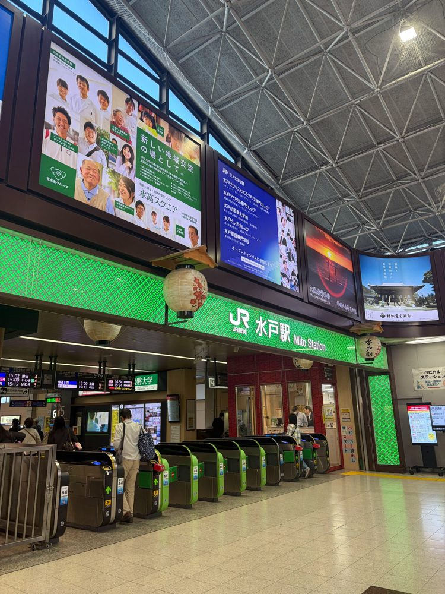

If you come to Mito Station, I have one simple tip for you: buy this sushi bowl. It is cheap, and it is really good.
Bara chirashi sushi for ¥699
It is called bara chirashi sushi (バラちらし寿司). “Bara” means scattered, so the fish is cut into small cubes and scattered on top of sushi rice. In one bowl you get tuna, salmon, white fish, crab, sweet egg (tamagoyaki), cucumber and lots of orange tobiko, flying fish roe. Pop, pop, pop in your mouth!
The price was ¥699, or ¥754 with tax. That is about 5 US dollars. At a sushi restaurant, you would pay much more.
Cheap, fresh and so good. About $5!
More bowls to choose from
- A bigger chirashi bowl with hon-maguro (bluefin tuna): ¥899 (¥970 with tax)
- Tekka-don, a bowl full of red tuna: ¥599 (¥646 with tax)
- Anago-don, sweet grilled sea eel on rice: ¥599 (¥646 with tax)
These are the prices I saw on November 21, 2026. Prices and bowls can change from day to day.
Where to find it

It is at Kaisen Kobo Tanaka (海鮮工房田中), a fish shop on the food floor of Excel, the station building at JR Mito Station. Go to Excel main building (本館) 1F, on the north exit side. It is right inside the station, so you don’t even need to go outside.
The fish shop is open 10:00–20:30 (please check the Excel website before you go, Sunday hours can be shorter). I went in the afternoon and there were many bowls. Some shops in Japan put discount stickers on sushi in the evening, so you might be lucky!
Tips for eating it
- Keep it cool and eat it the same day. The label says to keep it under 10°C.
- Ask for chopsticks (ohashi) and a little soy sauce at the register if they are not in the bag.
- Japan has few trash cans, so carry your empty bowl until you find one, or take it to your hotel.
I ate mine as a little reward after walking for one hour. It was the best $5 I spent all week 😋
If you try it, tell me on my YouTube!